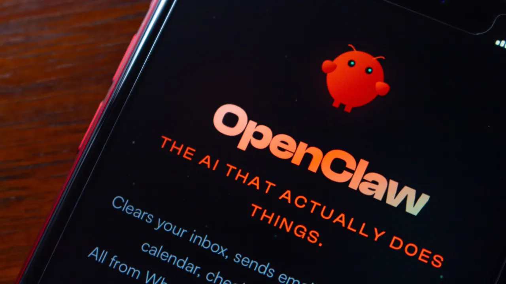

This article identifies security as the primary barrier to enterprise adoption of agentic AI, highlighting risks like unauthorized access, data leakage, and adversarial manipulation, and argues that traditional security measures are inadequate for autonomous AI agents.
本文指出安全问题是企业采用代理式AI（Agentic AI）的主要障碍，强调了未经授权的访问、数据泄露和对抗性操纵等风险，并认为传统安全措施不足以应对自主AI代理。
Key Points
- Security is identified as the single biggest barrier to enterprise agentic AI adoption.
- Key risks include unauthorized access, data leakage, and adversarial manipulation of autonomous agents.
- Traditional security measures (e.g., perimeter-based defenses) are deemed inadequate for the dynamic, autonomous nature of AI agents.
- The article argues for a fundamental shift in security thinking to address agent-specific vulnerabilities.
Context & Contrast
This article aligns with a growing consensus in the cybersecurity industry that agentic AI introduces novel attack surfaces beyond traditional AI/ML model vulnerabilities (e.g., prompt injection). It contrasts with earlier, more optimistic narratives that focused solely on agent capabilities without deeply addressing the security implications of granting autonomous systems persistent access to enterprise data and APIs. It echoes recent research from organizations like OWASP (e.g., Top 10 for LLM Applications) but specifically focuses on the enterprise deployment challenge.
Why It Matters
This article is significant because it frames security not as an afterthought but as the foundational prerequisite for enterprise agentic AI. It signals that the market is moving from capability demonstration to secure deployment, creating immediate demand for the identity infrastructure, cryptographic provenance, and zero-trust architectures that the Digital Identity & Trust profile researches. For SOC and Harmony Security profiles, it validates the need for new monitoring, detection, and response playbooks specifically for agent behaviors and agent-to-agent communications.
Critical Take
The article is a high-level opinion piece that identifies the problem but does not provide specific technical solutions or case studies. It may overstate the novelty of the risks (e.g., unauthorized access is a classic security problem, though the agent context amplifies it). The claim that 'traditional security measures are inadequate' is broadly true but lacks nuance; many existing IAM and PKI principles can be adapted. The article does not address the significant engineering and cost challenges of implementing agent-specific security at scale.
What to Watch
- Follow-up publications from major cloud providers (AWS, Azure, Google Cloud) on their specific agent security frameworks.
- Announcements from identity providers (PingIdentity, Microsoft Entra ID) regarding NHI-specific features for agent lifecycle management.
- Emergence of new startups or open-source projects focused on agent attestation, agent auditing, and agent-to-agent security protocols.
- Updates to OWASP Top 10 for LLM Applications to include agent-specific risks like tool misuse and multi-step authorization failures.

要点
- 安全问题被认定为企业采用代理式AI（Agentic AI）的最大障碍。
- 关键风险包括未经授权的访问、数据泄露以及对自主代理的对抗性操纵。
- 传统安全措施（如基于边界防御）被认为不足以应对AI代理的动态、自主特性。
- 文章主张安全思维需要进行根本性转变，以解决代理特有的漏洞。
背景与对比
本文与网络安全行业日益增长的共识一致，即代理式AI引入了超越传统AI/ML模型漏洞（如提示注入）的新型攻击面。它与早期更乐观的叙述形成对比，后者仅关注代理能力，而未深入探讨授予自主系统对企业数据和API的持久访问权限所带来的安全影响。它呼应了OWASP等组织的最新研究（例如LLM应用Top 10），但特别聚焦于企业部署的挑战。
重要性
本文的重要性在于，它将安全定位为企业代理式AI的基础前提，而非事后补救。这表明市场正从能力展示转向安全部署，从而为数字身份与信任研究方向所探索的身份基础设施、密码学来源和零信任架构创造了直接需求。对于SOC和Harmony Security研究方向，它验证了为代理行为和代理间通信制定全新监控、检测和响应预案的必要性。
批判性视角
本文是一篇高层次的评论文章，指出了问题，但未提供具体的技术解决方案或案例研究。它可能夸大了风险的新颖性（例如，未经授权的访问是一个经典的安全问题，尽管代理环境放大了它）。'传统安全措施不足'的说法大致正确，但缺乏细微差别；许多现有的IAM和PKI原则是可以被改造的。文章没有提及大规模实施代理专用安全所面临的重大工程和成本挑战。
后续关注
- 关注主要云服务提供商（AWS、Azure、Google Cloud）关于其特定代理安全框架的后续发布。
- 关注身份提供商（PingIdentity、Microsoft Entra ID）关于针对非人类身份（NHI）的代理生命周期管理功能的公告。
- 关注专注于代理证明（Agent Attestation）、代理审计（Agent Auditing）和代理间安全协议的新兴初创公司或开源项目。
- 关注OWASP LLM应用Top 10的更新，以纳入代理特有的风险，如工具滥用和多步骤授权失败。